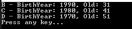

[Project design] プログラム制作(コーディング) - クラス作成方法
こんにちは。明月です。
この投稿はプログラム制作(コーディング) - クラス作成方法に関する説明です。
以前の投稿でコーディングする時に関数を作成する方法に関して説明しました。作成方法に関しては規約が決めていることや必ずこのように作成しなければならないということではありません。
ただ、私の経験により、このように作成するとプロジェクト管理することで便利だし、もっと直観的なコーディングすることではないかと思います。
クラスを作成する方法に関しても自分の規則があります。
ウェブプロジェクトの基準で作成したものなので、C/Sやアプリ開発する場合は差異があると思います。
オブジェクト指向プログラミング(OOP)の4つの特性で抽象化、カプセル化、継承化、多相化(ポリモーフィズム)があります。私の場合はこの4つの特性が何かを深刻に考えたことがあります。
実は我々がプログラム作成する時、4つの特性を無視して開発してもプログラムを作成することで問題がありません。抽象化しなくてもプログラムを作成できないことではないし、カプセル化、つまり、メンバー変数はpublicに設定してクラス外部にも参照することにしてもプログラムがエラーになることでもありません。
もちろん、継承化と多相化(ポリモーフィズム)に関しても同じです。
この4つの特性がなにかというとプログラムを作成する時に、もっと可読性をよくなるし、我々がドキュメントを作成しなくても、プログラムのコードを設計図みたいに作成するコーディング技法だと思います。
例えば、我々が人の名前と生年月日を入れると年齢を計算するプログラムを作成すると思いましょう。
using System;
using System.Collections.Generic;
using System.Linq;
// クラス
class Program
{
// 人のクラス
class People
{
// 名前のメンバー変数
private string name;
// 生年のメンバー変数
private int birthYear;
// 年齢
private int olds;
// コンストラクタで名前の青年を受け取って年齢を計算する。
public People(string name, int birthYear)
{
// 名前設定
this.name = name;
// 生年設定
this.birthYear = birthYear;
// 年齢を計算
this.olds = CalcOld();
}
// 名前のプロパティ(Javaにはget関数)
public string Name
{
get { return this.name; }
}
// 年齢のプロパティ(Javaにはget関数)
public int Olds
{
get { return this.olds; }
}
// 年齢計算関数
private int CalcOld()
{
return DateTime.Now.Year - birthYear;
}
// 出力関数
public override string ToString()
{
return $"{this.name} - BirthYear: {this.birthYear}, Old: {this.olds}";
}
}
// 実行関数
static void Main(string[] args)
{
// リストを生成して人を入力する。
var peoples = new List
()
{
// 2000年生のA
new People("A", 2000),
// 1990年生のB
new People("B", 1990),
// 1980年生のC
new People("C", 1980),
// 1970年生のD
new People("D", 1970)
};
// 30歳以上の人を出力
foreach (var p in peoples.Where(x => x.Olds > 30))
{
// 名前と年齢を出力
Console.WriteLine(p);
}
// 任意のキーを押してください
Console.WriteLine("Press any key...");
Console.ReadKey();
}
}

上のソースをみれば私がPeopleというクラスを作成しました。コンストラクタで名前と生年だけいれて年齢は計算します。ここで年齢の変数がpublicならどうでしょう？CalcOldという関数が意味がなくなります。
つまり、クラスのメンバー変数がクラス外部で修正ができるので無欠性を保証することができません。なのでメンバー変数を読み取り専用に設定するために、関数を通って制御します。それがカプセル化です。
ここで出力をToStringで再定義しましたので、ただpをConsole.WriteLine関数に入れると自動にToStringを出力することになります。
このようにクラスの特性を活用してプログラムを作成すればクラスを割りあって使うところではFacadeパターンにより、設計書がなくてもプログラムを作成がしやすいし、可読性もよくなります。
この言語によりクラスの特性は別の投稿で詳細に説明したことがあるから参考してください。
link - [Java] 14. オブジェクト指向プログラミング(OOP)の4つ特性(カプセル化、抽象化、継承、多相化)
link - [C#] 20. オブジェクト指向プログラミング(OOP)の4つの原則(カプセル化、抽象化、継承化、多相化(ポリモーフィズム))
クラスを作成する方法はOOPの特性を従って作ったらいいですが、構成がどうしようかを説明します。
我々がウェブプログラムを作成する時に、データを送受信する部分は一般的にClient(ブラウザ)からServer(WAS)に送受信する部分とServer(WAS)からデータベースから送受信する部分があります。
もちろん、仕様により他のウェブサーバや応用プログラミングとソケット通信やHttp通信してデータを送受信する場合もありますが、ここではClient - ServerとServer - DBだけ確認しましょう。
この流れはClientからServer、そしてDBからデータを取得してServerからClientに返却することが一般的です。そして一つのクラスで要請情報を入れてClientからServerにデータを要請をします。ServerからはDBにクエリクラスを生成してデータを取得します。
ここでClientからServerに要請したクラスを変換なしでそのままでデータベースの検索パラメータクラスを作成していまうとセキュリティの問題がある可能性があります。なので、この要請クラスは分離する方がよいでしょう。
また、ウェブページのformデータがデータベースのデータと必ず一致することではないので、分離して管理する方が良いです。
そのため、私はクラスの構成をClient-Server間のデータクラスをBeanクラスと言うし、Server-DB間のデータクラスをModelクラスと言うことで表現します。
つまり、プロジェクトのクラス構造はBeanクラスのパッケージ、Modelクラスのパッケージに分けてClientからServerに要請が来るとBeanクラスで受け取ってServerにはModelクラスに変換、データベースに検索してModelクラスをBeanクラスに変換して応答する構成で作成します。
using System;
// クラス
class Program
{
// 人のBeanクラス
class PeopleBean
{
// 名前のメンバー変数
private string name;
// 生年のメンバー変数
private int birthYear;
// コンストラクタで名前の青年を受け取って年齢を計算する。
public PeopleBean(string name, int birthYear)
{
// 名前設定
this.name = name;
// 生年設定
this.birthYear = birthYear;
}
// 名前のプロパティ(Javaにはget関数)
public string Name
{
get { return this.name; }
}
// 年齢のプロパティ(Javaにはget関数)
public int BirthYear
{
get { return this.birthYear; }
}
// Modelクラスに変換
public PeopleModel ToModel()
{
return new PeopleModel(this.name, DateTime.Now.Year - birthYear);
}
}
// 人のModelクラス
class PeopleModel
{
// 名前のメンバー変数
private string name;
// 生年のメンバー変数
private int olds;
// コンストラクタで名前の青年を受け取って年齢を計算する。
public PeopleModel(string name, int olds)
{
// 名前設定
this.name = name;
// 生年設定
this.olds = olds;
}
// 名前のプロパティ(Javaにはget関数)
public string Name
{
get { return this.name; }
}
// 年齢のプロパティ(Javaにはget関数)
public int Olds
{
get { return this.olds; }
}
// Beanクラスに変換
public PeopleBean ToBean()
{
return new PeopleBean(this.name, DateTime.Now.Year - olds);
}
}
// 結果のModelクラス
class ResultBean
{
// 結果
private Boolean ret;
// 結果メッセージ
private String message;
// コンストラクタ
public ResultBean(Boolean ret, String message)
{
// 結果
this.ret = ret;
// 結果メッセージ
this.message = message;
}
// ToString関数の再設定
public override String ToString()
{
// 結果がtrueなら
if (this.ret)
{
// メッセージと含めてリターン
return $"OK - {this.message}";
}
// NG結果
return "NG";
}
}
// JsonをBeanクラスに変換
static PeopleBean CreateBean(string json)
{
return Newtonsoft.Json.JsonConvert.DeserializeObject
(json);
}
// データベースに入力
static bool InsertPeopleModel(PeopleModel model)
{
return true;
}
// 実行関数
static void Main(string[] args)
{
// PostDataでJsonタイプを受け取ったと考えよう。
string postData = "{\"name\":\"A\", \"birthYear\": 1990}";
// Beanクラス生成
var bean = CreateBean(postData);
// BeanクラスからModelクラスを生成
var model = bean.ToModel();
// データベースからデータを取得して結果Beanクラスを生成
var ret = new ResultBean(InsertPeopleModel(model), $"{model.Name} : {model.Olds}");
// 結果を出力
Console.WriteLine(ret);
// 任意のキーを押してください
Console.WriteLine("Press any key...");
Console.ReadKey();
}
}
上の例は理解しやすいためにコンソールプログラムで作成しました。
まず、GETタイプでQueryStringやPOSTタイプのPostDataでJsonタイプでデータを受け取ったと思いましょう。
JsonのStringタイプではデータとして扱うことが大変なのでBeanクラスタイプに変換しましょう。また、データベースからクエリの検索条件およびデータを受け取るためにModelクラスに変換します。
上のソースはブラウザから生年を受け取りますが、検索条件には年齢に変換して検索します。つまり、生年から年齢に変換することが必要ですね。
また、データベースからデータをModelクラスで受け取ってまたBeanクラスに変換して画面に表示します。
BeanとModelのクラスを合わせて使っても良いですが、場合によりInjectバグが発生する可能性があり、セキュリティの脆弱性が発生する問題があります。なので、BeanとModelを分離して使いましょう。
でも、このままに使うと思えばクラスがとんでもなく多くなります。なので、ここからは抽象化して変数は一緒に使いますが、役割によりBeanとModelクラスになるように作成したらよいでしょう。
個人的にこのようにプログラムを構成すると作成のご苦労があると思いますが、ソース構造により可読性がすごくよくなります。Main関数(Controller)とFacadeパターン、Strategyパターンで構成もしやすくなるし、ソースを設計図みたいになります。
ここまでプログラム制作(コーディング) - クラス作成方法に関する説明でした。
ご不明なところや間違いところがあればコメントしてください。
- [Project design] プログラム最終テスト - ST(System test(Standard, Scenario))2021/10/26 19:10:07
- [Project design] プログラム結合テスト - IT(Integration test)2021/10/25 20:12:17
- [Project design] プログラム検証とテスト - Unitテスト2021/10/22 19:34:09
- [Project design] プログラム制作(コーディング) - クラス作成方法2021/10/20 19:28:09
- [Project design] プログラム制作(コーディング) - 関数作成方法2021/10/19 21:01:32
- [Project design] 詳細設計(インターフェース設計と抽象化作業)2021/10/18 18:23:15
- [Project design] 基本設計(画面設計とDB設計)2021/10/17 21:21:11
- [Project design] 要件定義(要求事項整理)2021/10/15 19:28:58
- [Project design] プロジェクトを工程(ウォーターフォール vs アジャイル)2021/10/14 18:36:04
- [Java] JWT(Json Web Token)を発行、確認する方法2022/03/14 19:12:58
- [Java] 61. Spring bootでRedisデータベースを利用してセッションクラスタリング設定する方法2022/03/01 18:20:52
- [Java] 60. Spring bootでApacheの連結とロードバランシングを設定する方法2022/02/28 18:45:48
- [Java] 59. Spring bootのJPAでEntityManagerを使い方2022/02/25 18:27:48
- [Java] 58. EclipseでSpring bootのJPAを設定する方法2022/02/23 18:11:10
- [Java] 57. EclipseでSpring bootを設定する方法2022/02/22 19:04:49
- [Python] Redisデータベースに接続して使い方2022/02/21 18:23:49
- [Java] Redisデータベースを接続して使い方(Jedisライブラリ)2022/02/16 18:13:17
- [C#] Redisのデータベースを接続して使い方2022/02/15 18:46:09
- [CentOS] Redisデータベースをインストールする方法とコマンドを使い方2022/02/14 18:33:07
- [Design pattern] 3-6. ステートパターン(State pattern)2021/11/17 20:04:47
- [Design pattern] 3-5. メメントパターン(Memento pattern)2021/11/16 20:01:36
- [Design pattern] 3-4. イテレータパターン(Iterator pattern)2021/11/15 19:31:28
- [CentOS] Linux環境(CentOS)でCassandra(NoSQL DB)をインストールする方法(DBeaverブラウザでNoSQL使い方)2021/11/12 17:33:58
- [Design pattern] 3-3. コマンドパターン(Command pattern)2021/11/05 17:01:42